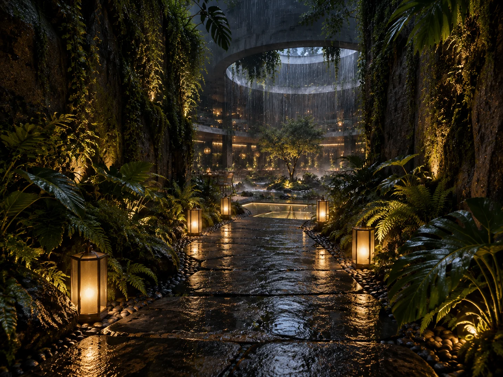
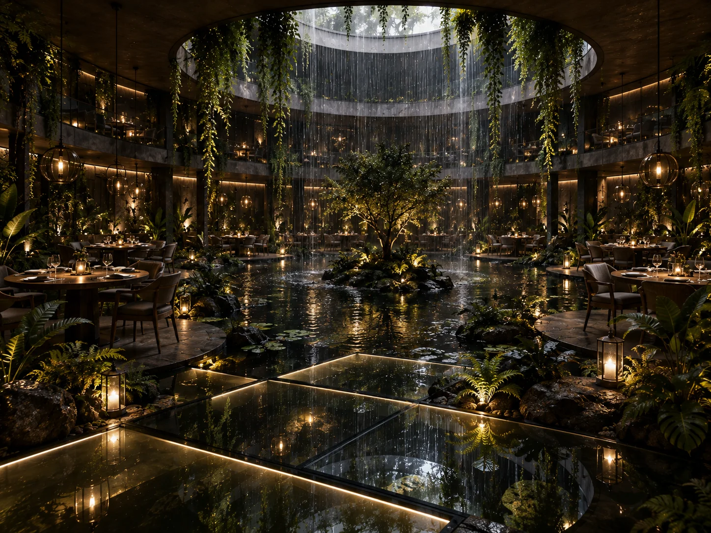
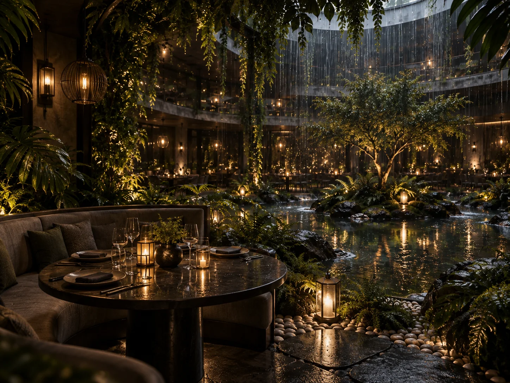
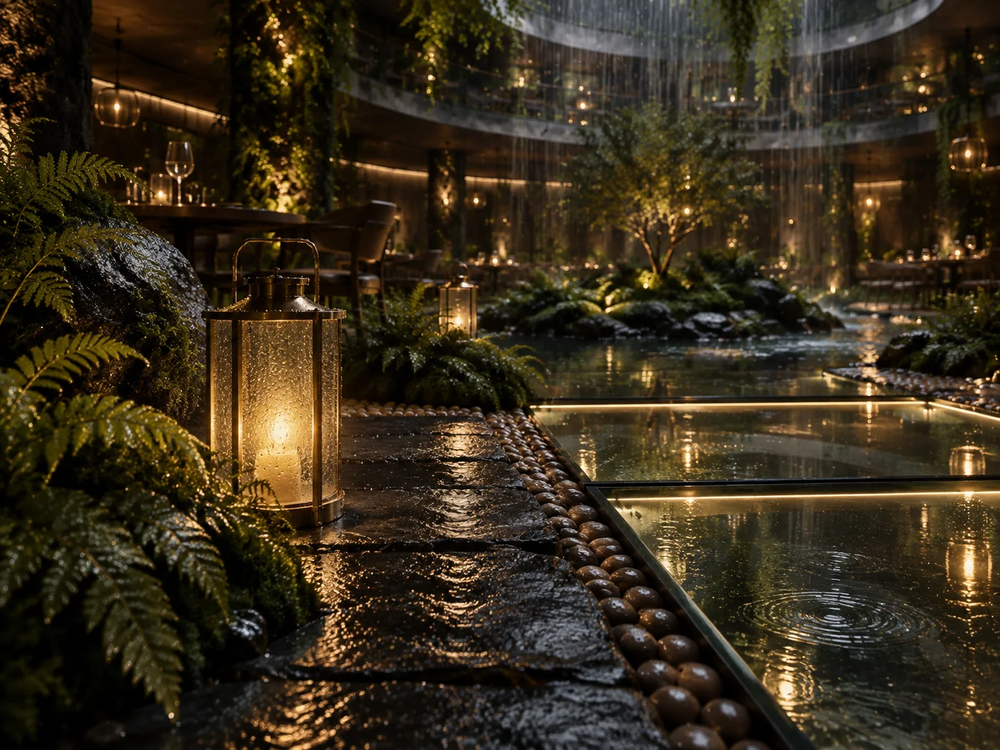
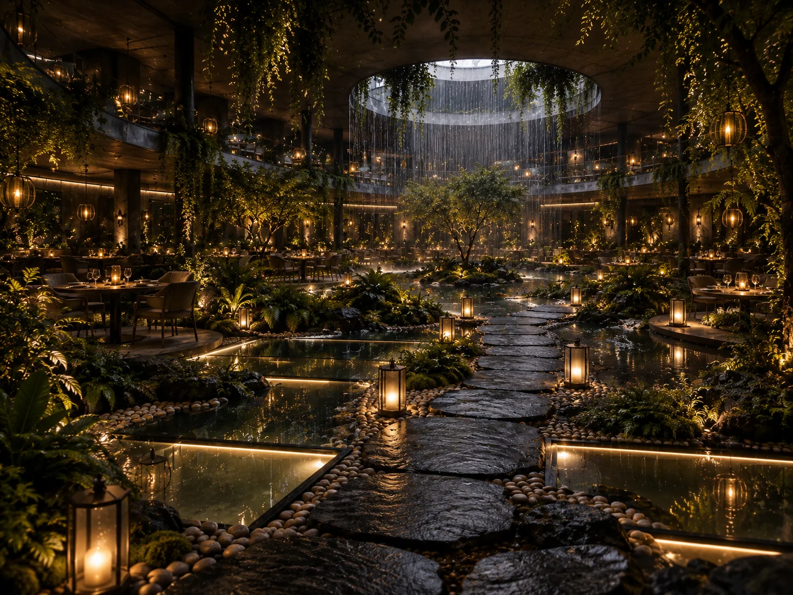
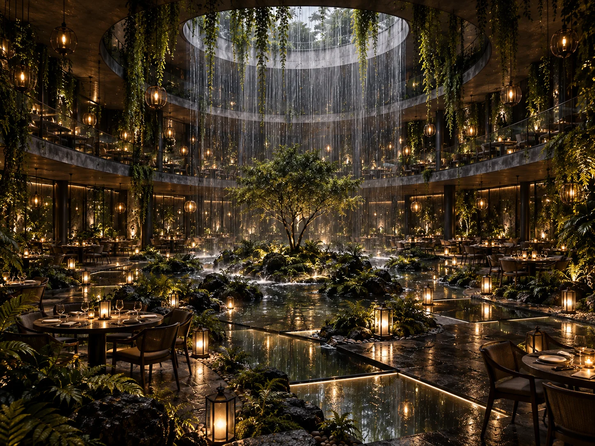

Garden restaurant concept
PETRICHOR
Rain, water and lantern light — a garden restaurant where the weather performs.

PETRICHOR is a garden restaurant concept built around rain and nature. Beneath a circular oculus, a curtain of rain falls into a still central pond, turning the weather into the room’s main performance. Tables gather around the water on stone terraces and glass floor panels, wrapped in dense tropical planting and the glow of brass lanterns. The name comes from the scent of rain on warm earth, and the whole concept follows that feeling: fresh, dark, alive. Glass, water and wet stone carry the reflections; warm light and soft seating keep the drama comfortable.
Material direction
Charcoal wet-look stone; structural glass floor panels; brushed brass lanterns; dark stained timber; moss, ferns and layered tropical planting; still and moving water. These are concept-stage material directions, with final products and detailing to be developed separately.
My role
Concept, atmosphere, lighting, materials and guest journey — Maria Andriiuk.
Concept & story
The concept treats rain as architecture. One gesture — the oculus rain curtain — organises the whole restaurant: the pond beneath it, the tables around it, the paths that cross the water towards it. Nature is not a backdrop but the main feature, and every seat keeps a view of the falling water.
Emotion & atmosphere
The intended mood is immersive, fresh and quietly dramatic. The sound of rain is the room’s constant music, cool air rises from the pond, and lanterns give each table its own pool of warmth. The sensory brief explores the scent of wet earth and green leaves; these remain creative directions for later operational consideration.
Light & material direction
Lighting follows the rain: cool ambient light within the falling curtain, warm lantern light at the tables, and concealed lines beneath the glass floor panels that make the water glow from below. Wet stone and brass multiply every source into reflections. Water systems, technical lighting and final specifications would be resolved during further design development.
Guest journey
01 / Arrival — A lantern-lit stone path through moss walls and foliage, rain already audible. 02 / The reveal — The path opens towards the oculus and its curtain of rain. 03 / Crossing — Stepping stones and glass panels carry guests over the pond. 04 / The table — Dinner beside the water, inside the sound of rain. 05 / Stay — The performance continues; the garden keeps guests longer.
Project scope
This self-initiated, unbuilt concept is presented through seven boards covering the idea, story, atmosphere, light and materials, guest journey and final composition. Concept imagery communicates the creative direction. Measured planning, construction documentation, engineering and site delivery are outside this concept study.

The idea — Arrival along a lantern-lit stone path, rain already in the air.Open full size ↗
The story — Tables gather around the pond beneath the falling rain.Open full size ↗
Emotion & atmosphere — A private alcove at the water’s edge, inside the sound of rain.Open full size ↗
Light & materials — Wet charcoal stone, brass lanterns, glass over glowing water.Open full size ↗
Guest journey — Arrival, reveal, crossing, the table and the stay: five moments in the rain.Open full size ↗
Final composition — The full hall: rain curtain, pond, lanterns and garden in one frame.Open full size ↗